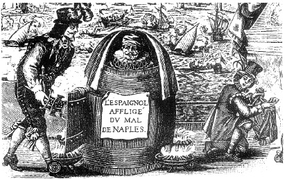

ŞEKİL 27. Bir İspanyol askerindeki “Napoli hastalığı”nın (frengi) fıçı içinde civa buharı ile tedavisi (Dünya Sağlık Örgütü Arşivi, Cenevre).2
Roma çağında zehirlere karşı uzunca zaman boyunca sirke kullanılmıştır. Tiryak, Eskiçağ’ın tıbbî maddeleri (“materia medica”) arasında Batı’da en önem verileni idi. Tiryak hazırlanmadan önce, onun bileşenlerinden her biri, hekimler tarafından sınandıktan sonra, ancak eczacı tarafından karıştırılırdı. Gezici ilaç satıcıları ya da tiryakçılar, ciddî hastalıklara çare olacak ilaçların yanı sıra, Ortaçağ’ın önemli ve sevilen ezme türü evrensel ilacı olan tiryakı da hazırlayıp satıyordu (ŞEKİL 28). Bu madde, içinde zehire karşı dirençli eczaların da yer aldığı çeşitli maddelerden ince toz halinde hazırlanıp daha sonra demirhindi ezmesi, beyaz bal ya da şeker çözeltisi ile macun (Lat. “electuarium”) haline getiriliyordu. 17. yüzyıldan itibaren Avrupa’da seyyar ilaç satıcılarının ticarî etkinlikleri cezalarla önlenmiştir. 1941 tarihli Alman ilaç kitabı Pharmacopoea germanica (Alman Farmakopesi) bile tiryak için şu bileşenleri veriyordu: Afyon, Jerez şarabı, melekotu kökü, zeravent kökü, baldıran, Seylan tarçını, adasoğanı, hintsafranı (zerdeçal) kökü, Malabar kakulesi, mür, demir vitriyolü ve süzme bal. Bunlardan Jerez şarabı, İngilizce’de “sherry” olarak bilinen beyaz İspanyol şarabının (İsp. “vino de Xeres”: Jerez şarabı) adı olup, İspanya’da eski adı “Xeres” (< Lat. “Caesaris”, Ar. “Şariş”) olan modern Jerez kentinin adından gelmedir. Kahverengi-siyah görünümlü ve baharat kokulu bir karışım olan bu tiryak, “harika bir ilaç, terletici bir araç, tüm zehirlere ve zehirleyici hastalıklara direnç kazandırıcı bir ilaç” olarak övülüyor, “özellikle zehirli hayvan ısırmalarına, beyinsel rahatsızlıklara, çarpıntılara, mide rahatsızlıklarına ve hazımsızlıklara iyi geldiği, dâhilî ve hâricî olarak kullanılabileceği” söyleniyordu.54